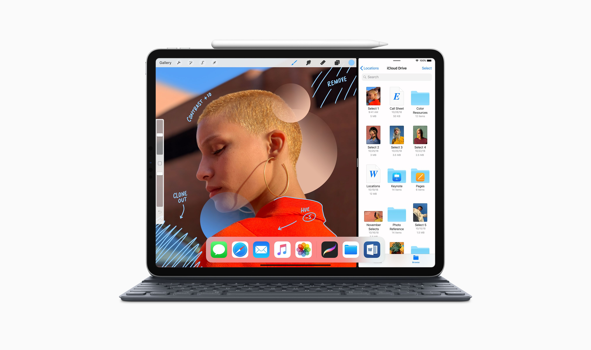

¿Una tableta puede reemplazar un pc?
Este es, sin duda, un iPad para todos. Que va a contentar a la mayoria.
Se trata sencillamente de una tableta para cubrir la mayoría de necesidades, incluso a la hora de editar contenido audiovisual que se defiende bastante
(y sorprendentemente) bien. Otra de las grandes bazas con las que juega es su autonomía, que roza sin pestañear las diez horas de duración.
Para muchos consumidores puede ser muy escaso pero hay que tener en cuenta su enfoque más apropiado como herramienta o complemento de trabajo
que para estar constantemente disfrutando de servicios de entretenimiento.